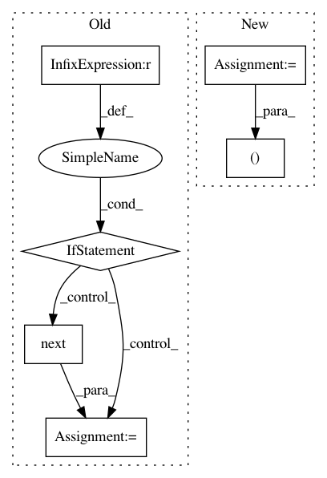

54cf543ccd03491d05c87617076b0feff69bffbc,grakel/kernels/neighborhood_hash.py,,nh_compare_labels,#Any#Any#,329
Before Change
c = 0
ui, uj = next(vx, None), next(vy, None)
while (ui is not None) and (uj is not None):
if Lx[ui] == Ly[uj]:
c += 1
ui = next(vx, None)
uj = next(vy, None)
elif Lx[ui] < Ly[uj]:
ui = next(vx, None)
else:
uj = next(vy, None)
return c/float(nv_x+nv_y-c)
After Change
// get labels for vertices
Lx, Ly = Gx[1], Gy[1]
c, a, b = 0, 0, 0
while a < nv_x and b < nv_y:
la = Lx[vx[a]]
lb = Ly[vy[b]]
In pattern: SUPERPATTERN
Frequency: 3
Non-data size: 6
Instances
Project Name: ysig/GraKeL
Commit Name: 54cf543ccd03491d05c87617076b0feff69bffbc
Time: 2018-03-09
Author: y.siglidis@gmail.com
File Name: grakel/kernels/neighborhood_hash.py
Class Name:
Method Name: nh_compare_labels
Project Name: ntucllab/libact
Commit Name: 325fae8fbbc16b3c1ca40559bb2a9c783efaf440
Time: 2015-11-25
Author: yangarbiter@gmail.com
File Name: libact/query_strategies/active_learning_by_learning.py
Class Name: ActiveLearningByLearning
Method Name: make_query
Project Name: tgsmith61591/pmdarima
Commit Name: 942f284052b22214d830c1bc2c8de03bffaa8d07
Time: 2020-02-18
Author: aaronreidsmith@gmail.com
File Name: build_tools/azure/render_meta.py
Class Name:
Method Name: